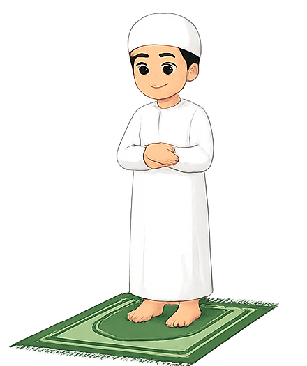
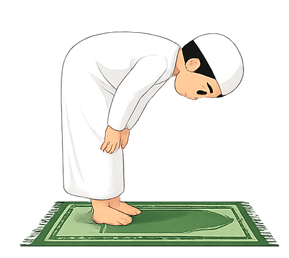
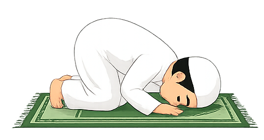
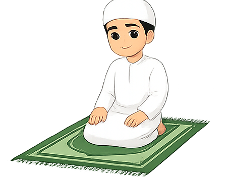

Vandaag
Blijf leren, elke stap telt.
Kleine acties bouwen grote gewoontes. Pak een doel of test je kennis.
Level
1
Selamu aleykum
Vandaag
Kleine acties bouwen grote gewoontes. Pak een doel of test je kennis.
Level progressie
Ayah van vandaag
رَبِّ زِدْنِي عِلْمًا
Mijn Heer, vermeerder mij in kennis.
Open doelen
Persoonlijke groei
Kennis oefenen
Kies je missie
Kies een onderwerp. Daarna open je een aparte pagina met Beginner, Gevorderd en Expert naast elkaar.
Voor beginners
Deze gids helpt je met de basis van wudhu en het gebed. Details kunnen per leraar of madhhab verschillen, maar dit geeft je een duidelijke start.
Wudhu
Neem in je hart voor om wudhu te doen voor Allah.
Begin rustig en was je handen drie keer.
Spoel je mond en reinig voorzichtig je neus.
Was je gezicht, daarna je armen tot en met de ellebogen.
Veeg over je hoofd, reinig je oren en was je voeten tot en met de enkels.
Tip: doe het langzaam. Netjes leren is belangrijker dan snel klaar zijn.
Gebed
Zorg voor wudhu, bedekte awrah, een schone plek en richting qiblah.
Maak intentie in je hart en zeg Allahu Akbar.

Lees Al-Fatiha. Daarna kun je een korte surah lezen, zoals Al-Ikhlas.
Ga naar ruku, kom weer rechtop, ga naar sujud, zit kort, en doe nog een sujud.


Na de laatste rak'ah zit je voor tashahhud en sluit je af met salam naar rechts en links.


Als je nog niet alles kent, begin met wat je leert en blijf stap voor stap oefenen.
Jouw reis
Totaal verdiend
Elke 100 XP brengt je naar een nieuw level.
Badges
Daily challenges